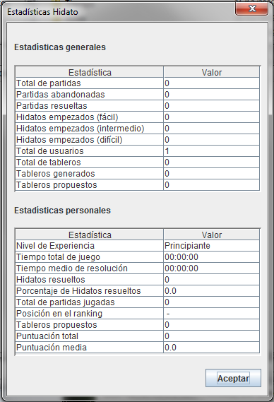

Seleccione el menú 'Estadísticas':

Seleccione 'Consultar Estadísticas':

Aparecerá la siguiente ventana:

Hay dos tipos de estadísticas: las generales y las personales. Las generales son estadísticas comunes a todas las cuentas que hay en la aplicación. Las personales són estadísticas asociadas a la cuenta con la que se ha iniciado sesión.
Estadísticas Generales
- Total de partidas: total de partidas que han iniciado todos los usuarios.
- Partidas abandonadas: número de partidas que han abandonado todos los usuarios.
- Partidas resueltas: número de partidas resueltas por todos los usuarios.
- Hidatos empezados (dificultad): número de hidatos empezados de esa dificultad por todos los usuarios.
- Total de usuarios: número total de usuarios que hay registrados en el sistema.
- Total de tableros: número total de tableros que hay en el repositorio.
- Tableros generados: número total de tableros del repositorio que han sido generados por el sistema.
- Tableros propuestos: número total de tableros del repositorio que han sido propuestos por el usuario.
Estadísticas Personales
- Nivel de experiencia: Nivel de experiencia en función de la puntuación media del usuario. Puede ser: Principiante, Intermedio, Experto o Maestro.
- Tiempo total de juego: tiempo total que el usuario ha empleado resolviendo Hidatos.
- Tiempo medio de resolución: tiempo medio que el usuario tarda en resolver un Hidato.
- Hidatos resueltos: número total de Hidatos que el usuario ha resuelto.
- Porcentaje de Hidatos resueltos: porcentaje de Hidatos que el usuario ha resuelto.
- Total de partidas jugadas: número total de partidas que el usuario ha empezado.
- Posición en el ranking: posición en el ránking de la mejor puntuación que el usuario ha obtenido.
- Tableros propuestos: número total de Hidatos correctos que el usuario ha propuesto.
- Puntuación total: puntuación acumulada del jugador.
- Puntuación media: puntuación media del jugador por partida finalizada.